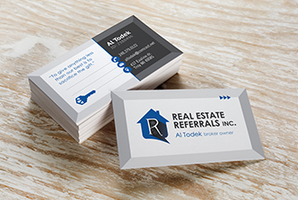

<!doctype html>
<html lang="en">
    <head>
        <meta charset="utf-8">
        <title>Jamie Todek | Portfolio Site</title>
        <link rel="stylesheet" href="css/normalize.css">
        <link rel="stylesheet" href="css/main.css">
    </head>
    <body>
        <header>
            <div class="full-width">
                <div class="one-forth-width">
                    
                </div>
                <div class="three-forths-width">
                    <nav>
                      <ul>
                        <li><a href="#">Print</a></li>
                        <li><a href="#">Webdesign</a></li>
                        <li><a href="#">About</a></li>
                        <li><a href="#">Contact</a></li>
                        <li><a href="#">Quote</a></li>
                      </ul>
                    </nav>
                </div>
                <h1>Jamie Todek</h1>
                <h4>Designer. Developer. Dreamer.</h4>
                <p>Skillfully merging the art of print communication<br>alongside hand-crafted web design.</p>
                <a href="#">Learn More</a>
            </div>
        </header>

        <main>
            <section id="skillset">
                <div class="seven-twelves-width">
                    <a href="#"> <div> Web Sites</div></a>
                    <a href="#"> <div> Branding</div></a>
                    <a href="#"> <div> Stationary</div></a>
                    <a href="#"> <div>  Web Stores</div></a>
                    <a href="#"> <div> Marketing</div></a>
                    <a href="#"> <div> Wordpress</div></a>
                </div>
                <div class="five-twelves-width">
                    <h3>my skillset</h3>
                    <p>For the past 12 years, my background<br>in printmaking and advertising has<br>evolved into communication design<br>with a focus on quality craftmanship,<br>succesful client relations and a<br>mastery of technical skills.</p>
                </div>
            </section>

            <section id="print">
                <div class="one-forth-width">
                    <h2>Print Design</h2>
                    <p>Tell your story.<br>Leave your mark.<br>Create your future.</p>
                    <p>Paper &amp; printed materials<br>communicate while<br>encouraging social<br>interaction and the return<br>of happy customers.</p>
                    <a href="#">Print Portfolio</a>
                </div>
                <div class="three-forths-width">
                    <a href="#"></a>
                    <a href="#"></a>
                    <a href="#"></a>
                </div>
            </section>

            <section id="web">
                <div class="seven-twelves-width">
                    <a href="#"></a>
                    <a href="#"></a>
                    <a href="#"></a>
                </div>
                <div class="five-twelves-width">
                    <h2>Web Design</h2>
                    <p>Build your online pressence.<br>Expand your repitoure.<br>Reach extended audiences.</p>
                    <p>Beautiful and immersive webstores,<br>user-centered wordpress sites and<br>design-oriented responsive web pages<br>bring unlimited growth opportunties<br>to indivduals and small businessness.<p>
                </div>
            </section>

            <section id="quote">
                <div class="full-width-width">
                    <h2>Let's Grow</h2>
                    <p>Inspired and ready to turn  your own dreams reality?<br>Let’s plant the seed of conversation about your next big design idea or<br>web project and find out how I can help your business grow.</p>
                    <a href="#">Get a quote</a>
                </div>
            </section>

            <footer>
                <div class="half-width">
                    <a href="http://www.behance.com/jtodek" target="new"></a>
                    <a href="http://www.facebook.com/jtodekdesign" target="new"></a>
                    <a href="http://www.instagram.com/jtodek" target="new"></a>
                </div>
                <div class="half-width">
                    <p>Designed by Jamie Todek</p>
                </div>
            </footer>
        </main>
    </body>
</html>
